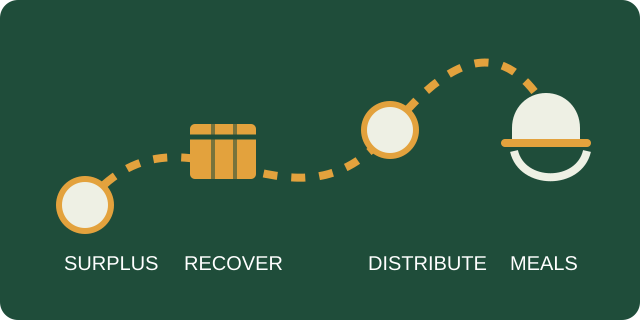

A third of South Africa's food never reaches a plate.
FoodForward SA recovers quality surplus food from farmers, manufacturers and retailers, and redistributes it to a vetted network of beneficiary organisations across all nine provinces.

2024/25 financial year
20,732tof surplus food recovered and redistributed nationally.
Daily reach
935,100vulnerable South Africans reached every day through 2,500+ beneficiary organisations.
From surplus to plate, in four steps
Every donation follows the same route. It's a short path, but closing it at scale is the entire job.
Surplus identified
Farmers, manufacturers and retailers flag quality, in-date food that won't be sold.
~10m tonnes wasted / year in SAFood recovered
FoodForward SA collects and sorts the food through its warehouse network.
9 warehouses nationallyDistributed to BOs
Vetted beneficiary organisations receive food matched to what they can use.
2,500+ organisationsMeals served
Community kitchens, ECD centres and shelters turn deliveries into meals.
R0.50 cost per mealTwo numbers that shouldn't coexist
South Africa wastes an estimated 10 million tonnes of food a year, while Stats SA data shows 15.8 million people face food insecurity. FoodForward SA exists in the gap between those two figures — treating surplus as a resource rather than a loss.
The organisation began in 2009 as a merger of four grassroots food-relief projects, and is today a certified member of the Global Foodbanking Network.
Read the full historyWhat a donation actually funds
- Warehouse sorting, cold storage and food-safety checks
- Transport to beneficiary organisations across all 9 provinces
- Quarterly, unannounced monitoring visits to every BO
- The FoodShare platform matching surplus to need in real time
Three ways food moves through the network
Core food recovery
The primary model: recovering surplus from the supply chain and warehousing it for distribution to vetted organisations.
Digital matching platform
A platform connecting surplus food donors directly with organisations that can collect and use it quickly.
Nutrition programme
Targeted food support for at-risk pregnant women and young children in partner communities.
Food, funds or time — all three close the gap
Businesses can donate surplus stock. Individuals can give funds or sign up to pack pallets at a warehouse near them.